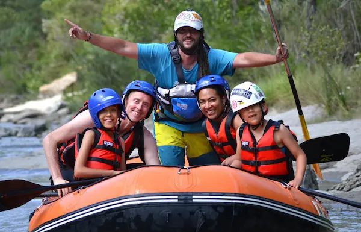
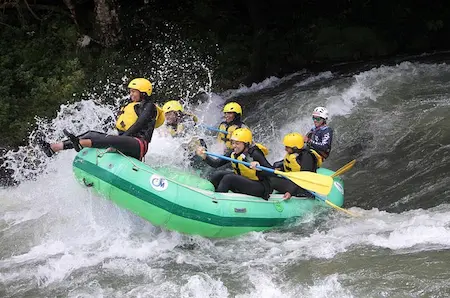
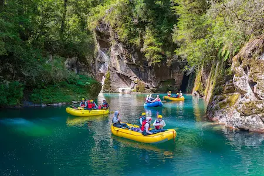

Canaima Family Float
Perfect for beginners and families with children. Enjoy beautiful scenery views, smooth waters, and an unforgettable swimming experience near the river shores under total guidance.
Select from our professionally guided tours. We have packages customized for every
experience level.
Have questions about group rates or custom schedules?
Contact Our Team

Perfect for beginners and families with children. Enjoy beautiful scenery views, smooth waters, and an unforgettable swimming experience near the river shores under total guidance.

Designed for true adrenaline seekers. Fight intense class IV rapids under the constant supervision of our swiftwater certified rescue professionals. Full gear included.

A majestic multi-day journey combining heavy rapid navigation with hiking tracks. Camp directly in front of the legendary Angel Falls and experience the jungle up close.
| Trip Package | Difficulty | Duration | Price per Person |
|---|---|---|---|
| Canaima Family Float | Easy (Class I-II) | 3 Hours | $40.00 |
| Churún Wild Rapids Run | Hard (Class III-IV) | 5 Hours | $80.00 |
| Angel Falls Luxury Expedition | Moderate (Class II-III) | 3 Days | $299.00 |